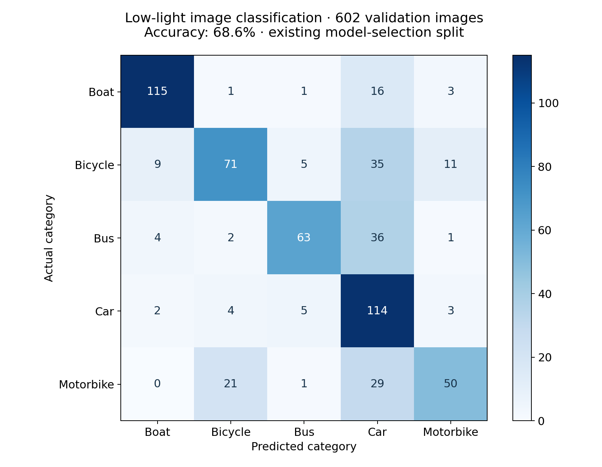
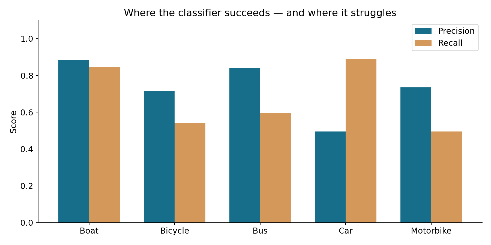

PYTHON / TENSORFLOW / MOBILENETV2
Low-light Vision.
Recognising five vehicle categories in low-light images.
The idea
A computer-vision experiment combining contrast enhancement, denoising and transfer learning. MobileNetV2 classifies boats, bicycles, buses, cars and motorbikes.
What I built
Image preprocessing, a MobileNetV2 classification head, training callbacks and class-level evaluation. Reproducible inference and evaluation tools expose the model’s strengths and common confusions.
The saved model was rerun on 602 images: 68.6% accuracy on the existing validation split. This split was used during model selection, so it is not an independent test. Car predictions have high recall but many false positives; motorbike and bicycle recall need improvement.
Explore the features

